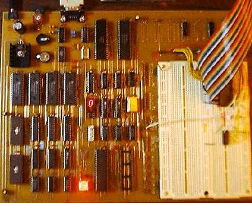
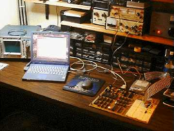

SBC6120-1
SBC6120-1


|
|
|
This page describes the SBC6120 model 1, and is here for historical interest only. If you are interested in the PDP-8 single board computer, you'll want to read about the SBC6120 model 2.
 The SBC6120 is a fairly conventional single board computer with the typical complement of RAM, EPROM, serial and parallel interfaces and a prototyping area. What makes it unique is that the CPU is the Harris HM6120 PDP-8 (yes, a PDP-8!) on a chip. The 6120 is the second generation of single chip PDP-8 compatible microprocessors, the Intersil IM6100 being the first, and was used in Digitals DECmate-I, II, III and III+ "personal" computers.The HM6120 gives us:
To this PDP-8 compatible microprocessor the SBC6120 adds:
The firmware in the 8KW EPROM, called BTS6120, adds:
 The SBC6120 can run all the standard DEC paper tape software, such as FOCAL-69, with no changes what so ever. Simply use BTS6120 to download FOCAL69.BIN from a PC connected to the console port (or use a real ASR-33 and read the real FOCAL-69 paper tape, if youre so inclined!), start at 00200, and youre running.OS/278, OS/78 and, yes - OS/8 V3D or V3S - can all booted and run on the SBC6120 using the RAM disk as the system device. Since the console interface in the SBC6120 is KL8E compatible and does not use a 6121, there is no particular need to use OS/278 and real OS/8 V3D runs perfectly well. Of course, you must still avoid using the KT8A extensions in the OS/8 DEVEXT kit as the KT8A IOTs conflict with the 6120 stack instructions. Getting an OS/8 image onto the SBC6120 in the first place is slightly tricky, but it can be done using the Spare Time Gizmos WinEight emulator. This is a software PDP-8 emulator for Microsoft Windows which runs any OS/8 version and which, in addition to emulating standard PDP-8 mass storage devices such as the RX01 and RK05, can also emulate the SBC6120 non volatile RAM disk hardware. The general procedure is to use WinEight to boot OS/8 from an RK05 or RX01 image, install the VM01 SBC6120 RAM disk system and non-system handlers, and then build a bootable RAM disk image on the PC which can be downloaded to the SBC6120 using BTS6120. As a historical note, the BTS6120 software started life in 1983 as a bootstrap program for an elaborate Intersil IM6100 system planned by the author. The software was developed and tested on a 6100 emulator running on a DECsystem-10, but it never saw any actual hardware. Although I built several simpler 6100 based systems, the one intended for this software proved to be too elaborate and complex and was never built. Never built, that is, until 1999 when I rescued some 6120 parts from a dead DECmate and decided that, with cheap SRAMs for mass storage and modern GALS instead of discrete TTL to build a console interface, it was time. That, and about six weeks of work designing the hardware and laying out the PC board, and another two months or so of hacking the BTS6120 software to work in this new environment, and you have the SBC6120. The future of the SBC6120, the SBC6120 Model II if you will, includes adding an IDE/ATAPI interface for "real" mass storage and possibly an integrated video subsystem and IBM PC style keyboard interface to make a complete, self contained PDP-8. It should be possible to put the entire thing on a PC board which could fit on the back of a standard 3.5" hard drive the only thing youd need to add would be the PC keyboard and a VGA display. |
Visit these Spare Time Gizmos
|